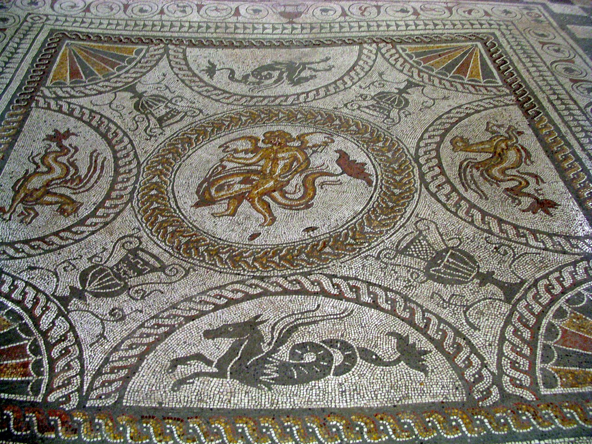
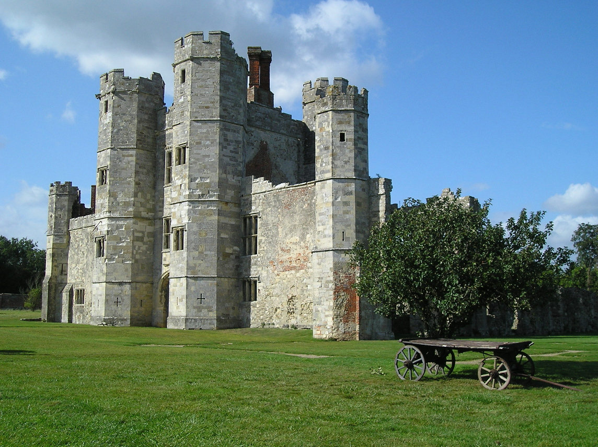
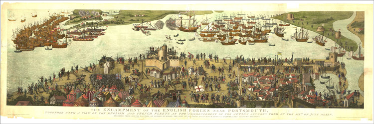
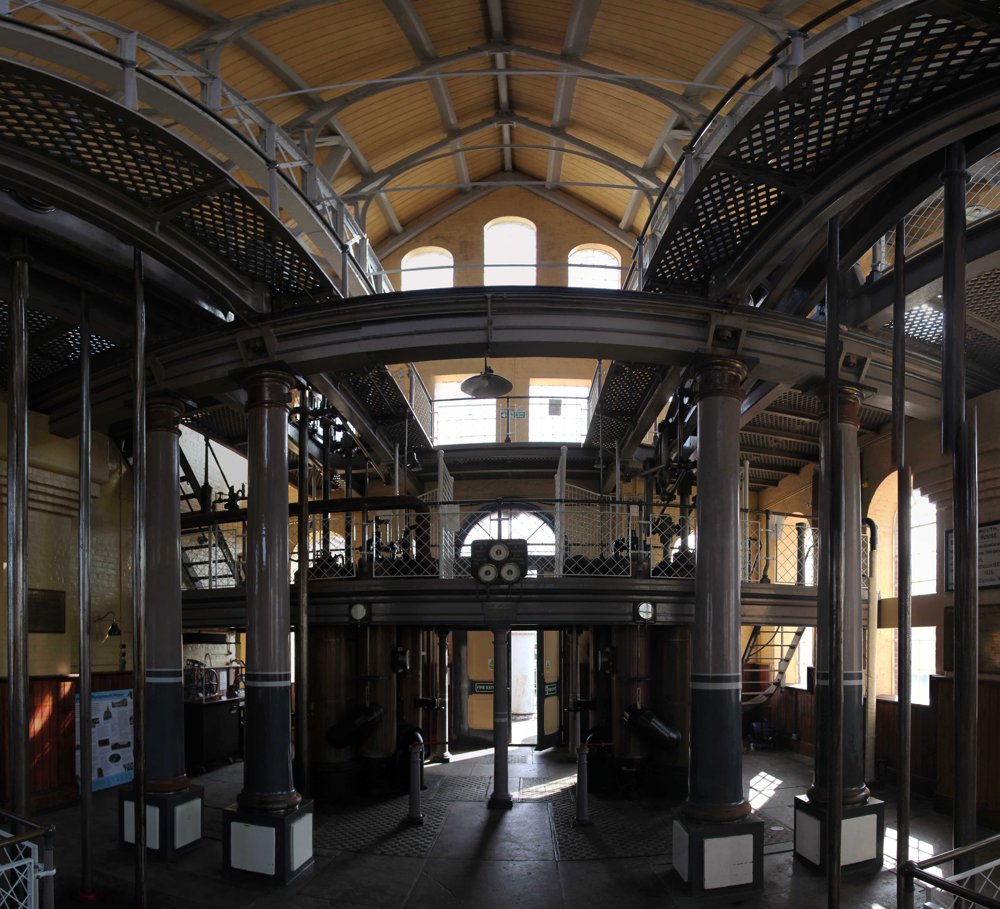

KS3: Water and Sanitation Through Time
Unit Checklist Tracker
| Lesson Title / Exam Task |
Page |
Do Now |
Tasks |
Review |
Score |
| How much progress did the Romans make in public health? | | / 5 | 〇 | | |
| Exam Question: | | N/A | O | | |
| Why did public health decline during the Middle Ages? | | / 5 | 〇 | | |
| Exam Question: | | N/A | O | | |
| To what extent did towns become filthier during the Early Modern period? | | / 5 | 〇 | | |
| Exam Question: | | N/A | O | | |
| How did the Industrial Revolution lead to a public health crisis? | | / 5 | 〇 | | |
| Exam Question: | | N/A | O | | |
| Why did it take the 'Great Stink' to finally clean up Britain's streets? | | / 5 | 〇 | | |
| Exam Question: | | N/A | O | | |
| Assessment Option 1: Public Health Domino Flowchart | | N/A | 〇 | | |
| Assessment Option 2: Cholera Investigation | | N/A | 〇 | | |
| Assessment Option 3: Source Utility Analysis | | N/A | 〇 | | |
L1: How much progress did the Romans make in public health?
Learning Objectives
Understand the scale of Roman public health engineering.
Explain why the Romans prioritized public health.
Do Now Activity
Score: / 5
1. What does AD stand for in historical dates?
2. What century is the year 1066 in?
3. Which ancient empire conquered Britain and built Hadrian's Wall?
4. What does the word 'Sanitation' mean?
5. What is a primary source?
Vocabulary Check
Fill in the blanks using the vocabulary words below.
cesspit | conduit | latrine
The Romans built massive aqueducts that acted as a __________________ for fresh water. For waste, they used a __________________ or went to a communal __________________ where water flushed the waste away.
It is easy to assume that people in the past did not care about cleanliness, but Iron Age communities developed highly practical systems that suited their way of life. Because farming roundhouses were spread out across the countryside, digging simple, temporary cesspits was a safe, hygienic, and sustainable way to manage waste without polluting nearby drinking water. During the British Iron Age (700 BC - AD 43), most families lived in circular wooden homes called roundhouses, such as those discovered by archaeologists at Silchester. Because the people of this era left no written documents behind, historians must rely on physical clues unearthed from the ground—a field of study known as archaeology. These physical discoveries show that Iron Age communities intentionally built their settlements near fresh springs, streams, or hand-dug wells to secure their daily water supply.
Q2. Identify how Iron Age communities managed their waste.

Source A: Source A: Roman communal latrines at Housesteads Fort (Hadrian's Wall)
This simple way of life was completely transformed in AD 43 when the Roman Empire invaded Britain. The Romans brought revolutionary sanitation technology and a strong belief that clean, flowing water was vital for keeping a society healthy. To bring vast amounts of clean water into their newly built stone towns and military outposts, such as Corbridge, Roman engineers constructed stone channels called conduits. These conduits used the natural pull of gravity to transport fresh water over miles from distant natural springs directly into urban centres.
Q3. Describe the purpose of Roman conduits and aqueducts.
Q4. How does this source demonstrate both the advancements and limitations of Roman public health?

Source D: Source D: Fishbourne Roman Palace
Local Link: Fishbourne Roman Palace
Just down the road from Fareham near Chichester, Fishbourne Roman Palace is the largest residential Roman building found in Britain. Originally built in the 1st century AD, likely as a reward for the local British client-king Togidubnus, the palace was a marvel of Roman engineering. It featured incredibly well-preserved remains of a Roman bathhouse and a sophisticated hypocaust (underfloor heating) system that pumped hot air beneath the luxurious mosaic floors. It is a perfect local example of the extreme luxury sanitation that elite Romans enjoyed, which you can actually visit today.
Visit the official Fishbourne Roman Palace website
Q5. Based on what you have learned about Roman sanitation, why do you think a wealthy palace like Fishbourne would have its own private bathhouse and hypocaust system, while ordinary Romano-British people did not?
Q6. How does the archaeological evidence at Fishbourne support the idea that elite Romans valued hygiene and comfort?

Source B: Source B: Seneca the Younger (c. 4 BC – AD 65)
In Roman Britain, this water supplied grand public bathhouses, such as the famous complex at Bearsden. Bathhouses were bustling social spaces where citizens exercised, relaxed, and washed themselves by walking in sequence through cold rooms, warm rooms, and steaming hot chambers. Clean water also constantly flushed through communal public toilets, known as latrines. At Housesteads Fort on Hadrian's Wall, soldiers sat side-by-side on stone benches built over deep, stone-lined channels. A continuous stream of water beneath the seats swept human waste directly into underground sewers, keeping the fort clean and preventing the spread of deadly diseases. To wipe themselves, Roman soldiers used a wet sponge attached to the end of a shared wooden stick.
Source C: Seneca the Younger on Roman Bathhouses (c. AD 62)
This is an extract from a letter by the Roman philosopher Seneca the Younger, complaining about the intense noise and activity of a Roman bathhouse he lived above. It shows that baths were busy, social hubs, not just places for quiet hygiene.
"I am surrounded by all kinds of noise... picture to yourself the assortment of sounds, which are strong enough to make me hate my very powers of hearing! When the gentlemen are exercising with their lead weights... I hear their groans... and next, hear the screech of a hair-plucker... and the various cries of the sausage-seller, the baker, and the sweet-seller, who hawk their goods about the baths."
Q7. Explain how bathhouses and latrines improved public health in Roman towns.
Q8. According to Seneca, what does this source reveal about the social and commercial atmosphere inside a Roman bathhouse?
When the Roman legions finally withdrew from Britain around AD 410 to defend their crumbling empire, they left behind their advanced engineering. Without Roman authorities and engineers to maintain the aqueducts, sewers, and bathhouses, the systems quickly fell into ruin. Local Britons did not possess the technical knowledge, wealth, or centralized government needed to repair them. As a result, Britain's sanitation slipped back into primitive patterns, and it would take well over a thousand years before towns enjoyed clean running water and public sewers again.
Q9. Evaluate the impact of the Roman withdrawal on Britain's sanitation.
Pair & Share Activity
Prompt: Discuss with your partner: Why would the Romans spend so much money on public health?
Think: Spend 1 minute quietly considering the question and forming your own opinion.
Historian's Corner: Historian's Corner
Simon Schama argues:
"The Romans were the first to provide their citizens with the basic requirements of public health. Rather than just building spectacular temples, they poured staggering amounts of money, engineering brilliance, and state resources into aqueducts, public bathhouses, and flushing latrines. It was not merely about hygiene, but about Roman identity; to be 'Roman' meant participating in the civilized, communal bathing culture that separated them from the so-called 'barbarians'. However, we must be careful not to overstate this progress: while the wealthy enjoyed luxurious private hypocausts, the vast majority of ordinary citizens still lived in crowded, smoke-filled insulae, sharing public latrines that were breeding grounds for intestinal parasites."
Writing Practice
Q10. Write a PEEL paragraph explaining how the Romans tried to keep their towns clean.
Documentary / General Notes
Title / Topic: ______________________________________________________________
L2: Why did public health decline during the Middle Ages?
Learning Objectives
Describe the hazards of a medieval town.
Explain why monasteries were healthier than towns.
Do Now Activity
Score: / 5
1. How did the Romans transport massive amounts of fresh water?
2. What did the Romans use to flush their public toilets?
3. Why did the Roman army need to stay healthy?
4. What did the Romans build in their forts to treat sick soldiers?
5. Did the Romans understand bacteria?
Vocabulary Check
Write a historically accurate sentence connecting two terms from the glossary box below.
gongfermer | miasma | monastery | cesspit | privy
Your Sentence:In rural villages, such as Wharram Percy in Yorkshire, ordinary peasants lived simple lives intimately tied to the changing seasons and the natural landscape. Securing clean water was a daily physical struggle that required backbreaking labor. Without any form of indoor plumbing, villagers had to collect their drinking and washing water by hand, carrying heavy wooden buckets from local springs, fast-flowing streams, or deep hand-dug communal wells. For their sanitation needs, peasants constructed rudimentary wooden outhouses situated over shallow earth pits at the bottom of their gardens, using handfuls of wild moss or leaves as natural toilet paper. Because medieval villages were small, sparsely populated, and surrounded by vast tracts of open land, these simple cesspits were highly practical. The natural soil effectively absorbed and filtered the waste, ensuring that it did not contaminate the local water supply or trigger major health crises.
Q2. Identify the main method of waste disposal in medieval villages like Wharram Percy.

Source A: Source A: The Canterbury Cathedral Waterworks Plan (c. 1165)
In stark contrast to the rustic simplicity of peasant villages, medieval monasteries were the absolute pinnacle of luxury and engineering sophistication in Medieval England. Christian monks were highly literate, exceptionally wealthy, and incredibly organized, managing vast agricultural estates. Crucially, they believed that physical cleanliness was a reflection of spiritual purity, bringing them closer to God and aiding their holy duties. Driven by this belief, monasteries designed and constructed highly complex water management systems using incredibly expensive imported lead and hollowed-out elm trunks for pipes. For example, surviving twelfth-century blueprints of Canterbury Priory reveal a sophisticated, gravity-fed network of green-colored pipes bringing fresh, pressurized spring water directly into the monastery for drinking and ceremonial washing. Meanwhile, a separate network of red-colored pipes was specifically designed to direct dirty wastewater away to continuously flush the communal latrines, keeping the air remarkably fresh.
Q3. Describe the sanitation facilities found in medieval monasteries like Canterbury Priory.
Q4. What does this highly detailed plumbing plan suggest about the role of monasteries in preserving public health during the Medieval era?

Local Link: Titchfield Abbey
Located right in Fareham, this Premonstratensian abbey relied on the River Meon. Like most monasteries, it had highly advanced water management for the time, including fresh water piped in for washing (the lavatorium) and a reredorter (latrine block) cleverly positioned over a running stream to carry waste away. The impressive stone ruins and medieval floor tiles are still visible today.
Visit the official English Heritage Titchfield Abbey website
Q5. How does the water management system at Titchfield Abbey support the idea that monasteries were much healthier places to live than Medieval towns?
The most severe and lethal sanitation crises of the era occurred in the rapidly growing and heavily overcrowded medieval towns, such as London and York. The high population density meant that thousands of people were crammed into tightly packed wooden houses lining narrow, unpaved streets. In these conditions, shared communal toilets overflowed rapidly, leaking raw human waste directly into the mud of the streets and seeping into nearby shallow wells. While wealthy merchants could afford to dig deep, private, stone-lined wells in their secure courtyards, poorer citizens faced a daily battle for clean water. They were often forced to buy expensive, unfiltered river water from professional 'water sellers'—laborers who hauled massive wooden barrels through the filthy streets on horseback, shouting to attract customers.
Q6. Explain why overcrowded medieval towns faced a filtration crisis.
To prevent these rapidly expanding towns from literally drowning in their own filth, city councils were forced to employ highly specialized, well-paid laborers known as 'gongfermers.' These men performed one of the most vital, yet utterly revolting, jobs in medieval society. Working strictly under the cover of darkness to avoid offending the public with the smell, gongfermers climbed down into deep, barrel-lined cesspits beneath public latrines and private homes. Armed only with wooden shovels and buckets, they scooped out the accumulated human waste, loaded it onto heavy horse-drawn carts, and transported it outside the town walls to be dumped in designated rural fields, where it was often sold to local farmers as potent agricultural fertilizer.
Q7. Explain the role of gongfermers in medieval towns.
The situation in major cities became so desperate that even the monarchy was forced to intervene. In 1357, King Edward III personally sent a scathing letter to the Mayor of London, expressing his absolute horror at the state of the capital. The King warned that the overwhelming filth and decaying animal carcasses lying in the streets were infecting the air with a terrible stench, which medieval physicians believed was directly causing deadly sickness—a concept known as 'miasma'. Edward III ordered the immediate, forceful removal of all waste and the strict fining of anyone caught dumping garbage in the River Thames, marking a significant early instance of royal intervention to preserve public health.
Q8. Evaluate the significance of Edward III's cleanliness mandate in 1349.
Pair & Share Activity
Prompt: Discuss with your partner: Who had better public health, a Roman soldier or a Medieval monk?
Think: Spend 1 minute quietly considering the question and forming your own opinion.
Historian's Corner: Historian's Corner
**Carole Rawcliffe** argues:
"Medieval towns were not entirely filthy; many had local laws requiring citizens to clean the street outside their house."
Writing Practice
Q9. Write a PEEL paragraph explaining why public health in towns got worse during the Middle Ages.
Documentary / General Notes
Title / Topic: ______________________________________________________________
L3: To what extent did towns become filthier during the Early Modern period?
Learning Objectives
Understand the impact of early modern urbanization.
Analyze the failure of Harington's flushing toilet.
Do Now Activity
Score: / 5
1. Why were medieval towns dangerous for public health?
2. What was a Gongfermer?
3. Why did medieval monks build clean water systems?
4. What is a cesspit?
5. What did King Edward III order in 1357?
Vocabulary Check
Write a clear definition and a historically accurate sentence for the term: conduit

Source A: Source A: Sir John Harington's flushing toilet design (1596)
The conceptual leap toward modern sanitation arrived during the Tudor period when the first flushing toilet—known as the water closet—was invented in 1596 by a brilliant but eccentric courtier named Sir John Harington. Harington designed and installed this mechanical marvel in his manor house, and later built a working model for his godmother, Queen Elizabeth I, at Richmond Palace. The device used a system of valves and a cistern of water to wash away human waste into a vault below. Yet, despite its ingenuity, almost no one adopted it. For a flushing toilet to function safely, a house required a constant, pressurized supply of running water to fill the cistern and a connection to a sprawling underground sewer system to wash the waste away. Because Early Modern London completely lacked both of these municipal networks, Harington’s visionary invention remained a useless, foul-smelling luxury isolated to the royal court.
Q2. Identify who invented the first flushing water closet.
Q3. Why do you think this brilliant invention failed to catch on in Early Modern Britain despite its obvious sanitary benefits?
However, monumental strides were being made in supplying the capital with fresh water. In 1613, a wealthy goldsmith and entrepreneur named
Sir Hugh Myddelton successfully completed the 'New River' project. This was a colossal, highly ambitious engineering feat that involved digging an artificial waterway to bring fresh, clean spring water from Hertfordshire across 38 miles of countryside directly into North London. Relying entirely on gravity, the New River transformed the city's water infrastructure. It provided London with a relatively clean and reliable water supply to feed the houses of wealthy subscribers through an extensive network of hollowed-out wooden pipes laid beneath the city streets, vastly improving living standards for those who could afford the subscription fee.
Q4. Describe the purpose of the New River project in 1613.

Local Link: Tudor Portsmouth & Southsea Castle
As Portsmouth grew into a vital naval hub under Henry VIII, the cramped, walled town became notoriously filthy, relying entirely on overflowing cesspits and open gutters. You can contrast this with the dedicated (though basic) latrine chutes built into the walls of nearby Southsea Castle for soldiers. The famous 'Cowdray Engraving' (shown here) is an authentic historical source depicting the devastating sinking of Henry VIII's flagship, the Mary Rose, right off the coast of Southsea Castle in 1545.
Visit the official Mary Rose Museum website
Q5. If you lived in the overcrowded, walled town of Tudor Portsmouth, what risks would you face from the lack of proper sewers and overflowing cesspits?
Despite the influx of fresh water, dealing with human waste remained a horrifying challenge in crowded 17th-century cities. To save space, many opportunistic landlords built indoor toilets known as 'houses of easement' that simply emptied directly into deep, unlined cellars immediately below the floorboards. In his world-famous diary entry on 20 October 1660, the wealthy government official Samuel Pepys recorded a disgusting reality of Early Modern urban life. He complained bitterly about the terrible, eye-watering stench of his neighbor's cellar privy, which had filled to bursting, leaked directly through the shared foundations, and completely flooded his own basement with raw human waste. It was a stark reminder that personal wealth could not protect citizens from the collective failure of urban sanitation.
Q6. Explain what Samuel Pepys' diary reveals about Early Modern privies.
By the year 1700, London's population had exploded to over 600,000, making it the largest city in Western Europe. Yet, the municipal systems to handle basic human needs completely failed to match this staggering, unprecedented growth. While the wealthy enjoyed piped water from the New River, poorer townspeople were left to struggle. They were forced to buy their drinking water from professional 'water sellers' who continued to haul large wooden barrels on horseback through the increasingly congested streets. Alternatively, women and children spent hours waiting in long, exhausting lines to gather a few precious buckets of water from public 'conduits'—communal lead cisterns that often ran dry during the hot summer months, leaving the poorest citizens vulnerable to thirst and disease.
Q7. Evaluate the effectiveness of Early Modern water sellers for public health.
Pair & Share Activity
Prompt: Discuss with your partner: Why didn't Sir John Harington's flush toilet become popular instantly?
Think: Spend 1 minute quietly considering the question and forming your own opinion.
Historian's Corner: Historian's Corner
**Roy Porter** argues:
"The rapid growth of London meant that traditional methods of waste disposal simply could not cope."
Writing Practice
Q8. Write a PEEL paragraph explaining why the growth of towns (urbanisation) made public health worse in the Early Modern period.
Documentary / General Notes
Title / Topic: ______________________________________________________________
L4: How did the Industrial Revolution lead to a public health crisis?
Learning Objectives
Describe the squalor of industrial towns.
Explain how Dr. Snow disproved the Miasma theory.
Do Now Activity
Score: / 5
1. Why did rivers in early modern towns become open sewers?
2. Who invented a working flushing toilet in 1596?
3. Why did Harington's flushing toilet fail to catch on for 250 years?
4. What does 'urbanisation' mean?
5. How did early modern townspeople get their drinking water?
Vocabulary Check
Fill in the blanks using the vocabulary words below.
urbanization | cholera | epidemic | public health | laissez-faire
Rapid __________________ meant cities grew too fast. The government believed in __________________, doing nothing to help. This led to a terrible __________________ of __________________, forcing people to finally take __________________ seriously.
Between 1750 and 1850, the Industrial Revolution triggered an unprecedented demographic explosion, causing Britain's population to skyrocket from roughly 6 million to over 21 million. Desperate for employment and a better life, thousands of rural agricultural families flooded into rapidly expanding, smoke-filled cities like Manchester, Leeds, and London to work in enormous steam-powered textile factories and deep coal mines. This resulted in an era of rapid, totally unregulated urbanization. Cities expanded so violently that local governments were entirely overwhelmed. Without any planning laws or building regulations, the sheer speed of this migration resulted in intense, suffocating crowding, transforming once-small market towns into sprawling industrial metropolises choked with soot and desperate workers.
Q2. Identify two effects of the industrial population surge on factory towns.
To maximize their profits from this desperate influx of workers, opportunistic landlords hastily built cheap, structurally unsound 'back-to-back' terraced brick housing blocks. These rows of houses shared three walls with their neighbors, meaning they had no rear windows, absolutely zero cross-ventilation, and trapped the damp, polluted air inside. Crucially, these poorer families did not have the luxury of indoor running water or private toilets. Instead, entire streets of up to 100 people had to rely on a single, shared outdoor street pump and perhaps two communal privies located in a filthy shared yard. The street pumps only supplied water for a few unpredictable hours a day, and this water was often visibly brown, foul-tasting, and highly polluted by industrial runoff and human waste leaking from the adjacent privies.
Q3. Describe the living conditions in industrial back-to-back housing.

Local Link: The 1849 Portsmouth Cholera Epidemic
As the Industrial Revolution caused Portsea's population to explode around the dockyard, overcrowding led to severe sanitation crises. In the summer of 1849, a devastating cholera outbreak hit Portsmouth, killing over 800 people. Primary sources from the time, such as Robert Rawlinson's 1850 sanitary report, detailed horrific scenes of open sewers running directly into the streets and drinking wells contaminated by overflowing cesspits. It perfectly mirrors the national crisis and the deadly consequences of the Miasma theory.
Discover more local history at Portsmouth Museum
Q4. Why did rapid population growth in places like Portsea make the 1849 cholera outbreak so devastating for the local community?

Source A: Source A: Dr. John Snow's Cholera Map of Soho (1854)
This catastrophic lack of sanitation created the perfect breeding ground for disease. Cholera, a terrifying and agonizing waterborne bacterial infection, struck Britain for the first time in 1831, having spread along global trade routes from India. The disease caused rapid, uncontrollable diarrhea and vomiting, leading to severe dehydration; victims' skin would turn a ghastly shade of blue before they died, often within 24 hours of showing the first symptoms. Over 31,000 people died in the horrifying first epidemic alone. Because doctors falsely believed the disease was spread by 'miasma'—bad, foul-smelling air—their attempts to fight it by burning tar in the streets were useless. The terrifying speed of the deaths triggered mass national panic and starkly highlighted the catastrophic, deadly failure of municipal public health.
Q5. Explain how the cholera epidemics forced the government to act.
Q6. How did Dr. Snow use this map to challenge the prevailing 'miasma' theory of disease?
In response to the mounting death toll and public outcry, a dedicated civil servant named Edwin Chadwick launched a massive, pioneering investigation into the living conditions of the poor. In 1842, he published his landmark 'Report on the Sanitary Condition of the Labouring Population.' Using rigorous statistical data, Chadwick explicitly documented the horrific filth, suffocating damp, and overcrowded conditions of the industrial working class. He forcefully argued that poverty and disease were not caused by laziness, but by the horrific physical environment. Chadwick strongly advocated for a unified, national system of deep arterial drainage and a constant, pressurized supply of clean water to every home, laying the intellectual foundation for the modern public health movement.
Q7. Evaluate the significance of Edwin Chadwick's 1842 report.
Pair & Share Activity
Prompt: Discuss with your partner: Was it fair for the government to follow a 'laissez-faire' attitude?
Think: Spend 1 minute quietly considering the question and forming your own opinion.
Historian's Corner: Historian's Corner
**Steven Johnson** argues:
"John Snow's map of the Broad Street cholera outbreak was a triumph of medical detective work."
Writing Practice
Q8. Write a PEEL paragraph explaining why John Snow's discovery at the Broad Street pump was a turning point.
Documentary / General Notes
Title / Topic: ______________________________________________________________
L5: Why did it take the 'Great Stink' to finally clean up Britain's streets?
Learning Objectives
Understand the catalyst of the Great Stink.
Evaluate the significance of Bazalgette's sewers.
Do Now Activity
Score: / 5
1. What was the 'laissez-faire' attitude?
2. What terrifying waterborne disease first struck Britain in 1831?
3. What scientific theory did doctors wrongly believe caused disease?
4. How did Dr. John Snow prove cholera was waterborne?
5. Who published a damning report on sanitary conditions in 1842?
Vocabulary Check
Write a historically accurate sentence connecting two terms from the glossary box below.
sewer | germ theory | sewage | civil engineering | infrastructure
Your Sentence:For decades, the medical establishment stubbornly clung to the 'Miasma Theory,' believing that all diseases were spread by foul-smelling, invisible clouds of bad air. However, during the devastating 1854 cholera outbreak in the Soho district of London, a brilliant physician named Dr. John Snow fundamentally challenged this assumption. By painstakingly mapping the precise locations of hundreds of cholera deaths on a street map, Snow noticed a terrifying cluster centered around a single, highly popular water pump on Broad Street. He proved that the victims were not breathing the same air, but drinking the same contaminated water, which was secretly drawing from a nearby leaking cesspit. By physically removing the pump's handle so the public could no longer drink the infected water, Snow single-handedly stopped the Soho outbreak, scientifically proving that cholera was waterborne.
Q2. Identify what John Snow's Broad Street map proved about cholera.
Despite John Snow's brilliant statistical proof, the government remained paralyzed by the enormous cost of rebuilding London's sewers. It took an overwhelming environmental crisis to force them into action. During the unusually hot and dry summer of 1858, the River Thames—which received the raw, untreated sewage of over two million Londoners—began to literally bake in the sun. The resulting stench was so incredibly overpowering and nauseating that it became known as 'The Great Stink.' The smell completely disrupted parliamentary meetings in the newly built Palace of Westminster, forcing politicians to flee the building with handkerchiefs soaked in chloride of lime pressed to their faces. Terrified by the stench and finally personally affected by the crisis, Parliament rapidly passed emergency legislation to fund a complete rebuild of the capital's sanitation networks.
Q3. Describe the impact of the Great Stink on Parliament in 1858.

Local Link: Eastney Beam Engine House
This is Portsmouth's direct equivalent to Joseph Bazalgette's London sewers! Built in 1887 by Sir Frederick Bramwell, these massive Victorian steam-powered beam engines were constructed to pump Portsmouth's raw sewage out to sea at Langstone Harbour. The ornate cast-iron machinery, housed in a grand Victorian brick pump house, finally cleaned up the city's streets and eliminated cholera locally.
Visit the Eastney Engine House website
Q4. How did the construction of the Eastney Beam Engine House in 1887 solve the exact same public health crisis in Portsmouth that Bazalgette solved in London?

Source A: Source A: Construction of Joseph Bazalgette's intercepting sewers
Tasked with this monumental challenge, the visionary Chief Engineer of the Metropolitan Board of Works, Joseph Bazalgette, designed and constructed one of the greatest engineering marvels of the 19th century. Between 1858 and 1865, his massive army of 'navvies' (laborers) excavated millions of tons of earth to build a spectacular, interconnected network of 1,300 miles of deep, enclosed brick sewers beneath London. Bazalgette utilized revolutionary Portland cement to ensure the tunnels were entirely watertight. This ingenious system successfully intercepted the city's waste before it could reach the Thames, using massive steam-powered pumping stations to divert it far downstream toward the sea. Bazalgette's sewers virtually eliminated cholera in the capital, saving tens of thousands of working-class lives.
Q5. Explain how Joseph Bazalgette's sewer system solved London's waste problem.
Q6. What does the sheer scale of this brickwork reveal about the Victorian government's response to the Great Stink of 1858?
While British engineers were building massive physical barriers against disease, scientists on the continent were finally uncovering the invisible biological culprits. In 1861, the brilliant French microbiologist Louis Pasteur definitively proved 'Germ Theory' through a series of elegant experiments with swan-necked flasks. Pasteur demonstrated that microscopic, living organisms—bacteria—were responsible for the decay of organic matter and the spread of infections. This groundbreaking discovery completely destroyed the old Miasma theory. It provided the definitive, undeniable scientific backing that reformers like Chadwick and Snow had lacked, proving that advanced sanitation, sterile medical environments, and strict public hygiene were absolute necessities to stop the transmission of deadly germs.
Q7. Explain the link between Louis Pasteur's Germ Theory and sanitation.
Armed with the irrefutable scientific truth of Germ Theory and the undeniable success of Bazalgette’s sewer system, the British government decisively abandoned its old policy of 'laissez-faire' (leaving things alone). In 1875, Parliament passed a landmark, uncompromising Public Health Act. This revolutionary legislation legally forced every local municipal council in the country to take strict, inescapable responsibility for the physical well-being of its citizens. The Act mandated that councils must provide clean, piped water, ensure the safe disposal of all sewage, pave and clean the streets, and employ specialized Medical Officers of Health to inspect poor housing. It marked a permanent, fundamental shift in the relationship between the state and the people, establishing the modern expectation that the government must protect public health.
Q8. Evaluate the significance of the 1875 Public Health Act for modern sanitation.
Pair & Share Activity
Prompt: Discuss with your partner: What finally forced Parliament to act?
Think: Spend 1 minute quietly considering the question and forming your own opinion.
Historian's Corner: Historian's Corner
**The Observer Newspaper, 1861** argues:
"Bazalgette's sewer system was the most extensive and wonderful work of modern times."
Writing Practice
Q9. Write a PEEL paragraph explaining how Joseph Bazalgette's sewers improved public health in London.
Documentary / General Notes
Title / Topic: ______________________________________________________________
Generated: 2026-08-14 15:48:51 UTC | Unit: water_and_sanitation